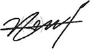

두산건설은 안전보건을 최우선 가치 및 책임으로 인식하고 휴머니즘 안전문화 및 사고예방안전,
기술안전의 강한 실행력을 바탕으로 모든 구성원의 생명과 안전을 보호하기 위한 지속적인 개선 활동을 실천한다.
모든 구성원은 불안전한 작업환경을 개선하고 교육 및 절차화를 통한
불안전한 행동 제거하여, 안전보건 성과의 지속적 향상을 추구한다
사업활동과 관련된 안전보건 법규 및 협약, 기타 요구사항을 준수하고
엄격한 사내 관리 기준을 설정하여 충실히 이행한다.
근로자에게 안전보건경영방침을 전파하고, 적극적인 의사소통과
투명한 경영 성과를 공개를 통해 자율적 동참을 유도한다.
협력사 등 이해관계자들의 안전보건 증진을 위해 협업을 확대하고
관련 회사가 안전보건활동에 참여하도록 유도한다.
안전보건경영방침의 효과적 실현을 위하여 수립한 목표 및 활동 계획의
이해 여부를 정기적으로 평가하여 안전문화가 정착될 수 있도록 한다.
2022년 01월 10일
cso 이강홍 
두산건설 주식회사